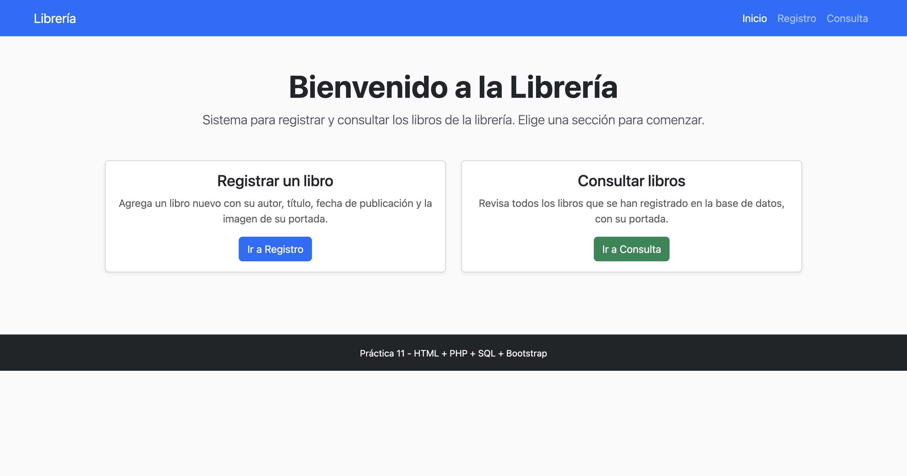
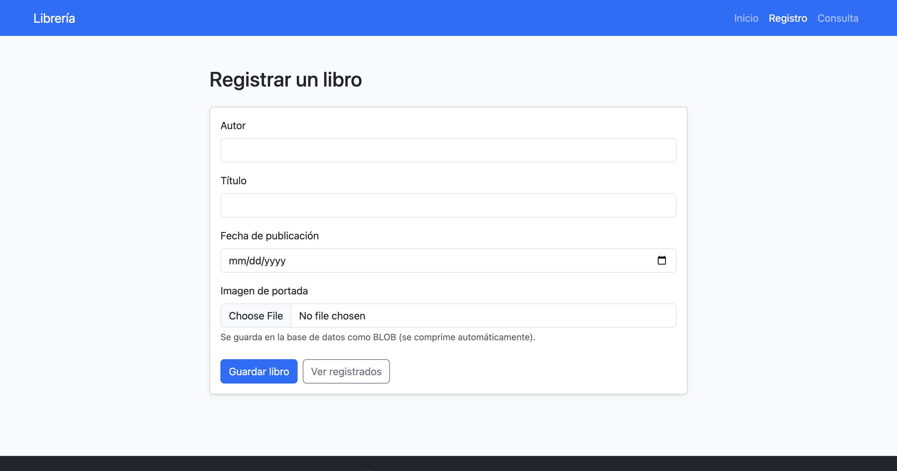
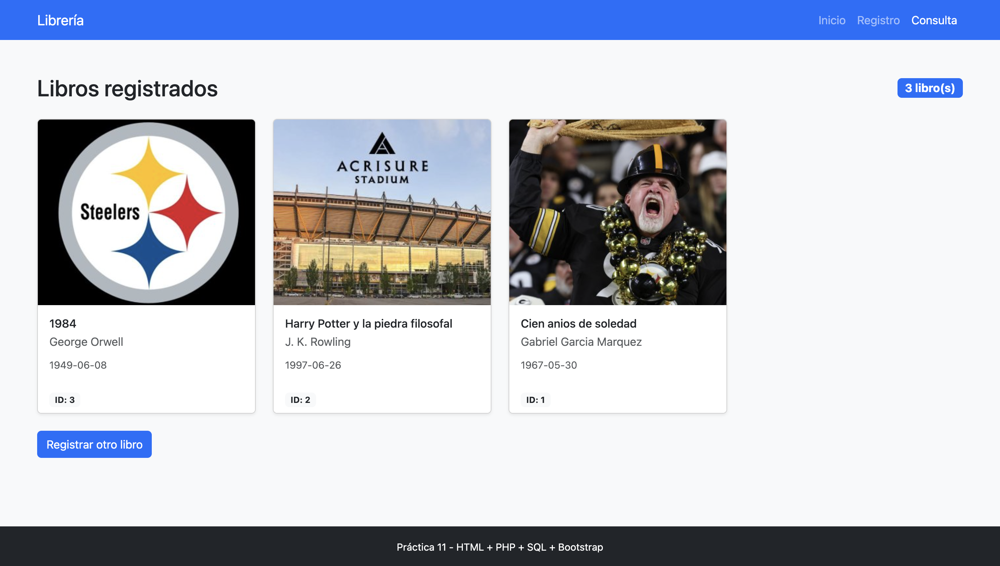

Alumno: Adrian Huelga Correa
Materia: Programación para Internet (SIS3410)
Universidad: Universidad Anáhuac México Norte
Descripción: Mini-sistema de registro de libros para una librería, hecho con PHP, MariaDB (en Docker) y Bootstrap 5.
Página de bienvenida con la barra de navegación de Bootstrap que lleva a las tres secciones del sistema.

Formulario para dar de alta un libro: autor, título, fecha de publicación e imagen de portada.
La imagen se envía con enctype="multipart/form-data" y se guarda en la base de
datos como dato binario (BLOB).

Lista todos los libros registrados en la base de datos. Cada libro se muestra en una tarjeta
de Bootstrap, y la portada se recupera del BLOB y se muestra con
data:image/jpeg;base64,....

Base de datos relacional libreria en un contenedor MariaDB.
| Campo | Tipo | Descripción |
|---|---|---|
| id | INT (PK) | Identificador del libro |
| autor | VARCHAR(100) | Nombre del autor |
| titulo | VARCHAR(150) | Título del libro |
| fecha_publicacion | DATE | Fecha de publicación |
| portada | BLOB | Imagen de la portada (binario) |
Con Docker Desktop abierto:
docker compose up -d --buildy se abre http://localhost:8080/index.php.
El proyecto se desarrolló con Git. El repositorio local contiene commits progresivos (configuración inicial, página de inicio, registro, consulta, volcado y reporte) y posteriormente se vinculó con GitHub.
Práctica 11 · Adrian Huelga Correa · Programación para Internet